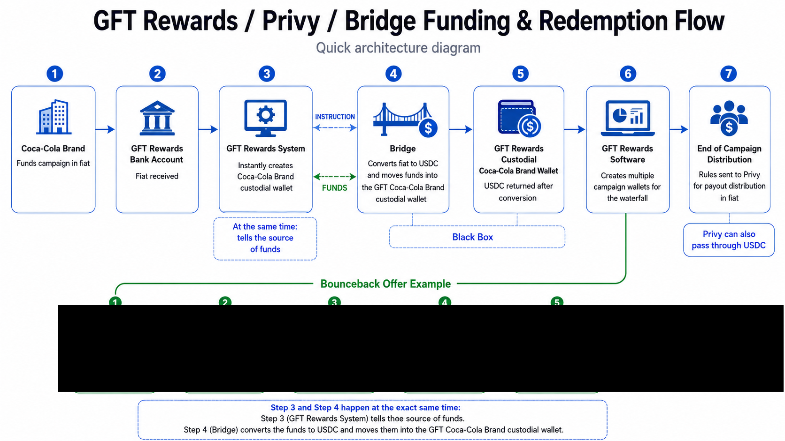

BUSINESS REQUIREMENTS DOCUMENT
Coke funds the campaign. GFT programs the economics. Bridge converts the money. Privy mirrors the payout state.
A clean brand onboarding and campaign-management experience with a visible back-end funding path, a programmable $0.75 redemption waterfall, and downstream stakeholder payout controls.
01 · Brand onboarding
Brand onboarding begins with a clean GFT experience built around autonomous actions.
The brand lands on a white GFT screen reading “Welcome to GFT, Let’s Get Started.” The first actions are Build A Campaign and Enter Your Banking Information. Build A Campaign opens the live GFT campaign admin at admin.gftrewards.com.
Banking information launches a Plaid-style prototype flow. After the demo connection is complete, the experience returns with “Congrats, Let’s Build a Campaign.”
02 · Campaign portfolio
$1M funded, $950K allocated, three live campaign wallets.
CampaignFundingRedeemedRedeemed value
Coke Campaign 1$400,00042%$168,000
Coke Campaign 2$200,00054%$108,000
Coke Campaign 3$350,00092%$322,000
Redeemed value above is the campaign funding amount multiplied by the user-supplied redemption percentage. It is displayed separately from the $0.75 transaction fee waterfall.
03 · Updated product behavior
Campaign creation, waterfall presentation and shopper payout are explicit product requirements.
Build A Campaign must hand the user directly into the existing GFT campaign-management product at https://admin.gftrewards.com/. The prototype opens that destination in a new browser tab so the onboarding experience connects to the live GFT campaign workflow rather than recreating it.
All visible waterfall amounts are shown with two digits after the decimal. The Stripe Partner economic rule remains one-half cent per redemption; the user interface displays cent-rounded values while the underlying rule can retain the more precise value.
The shopper payout example is a $3.00 Coke redemption. The call to action reads Load to Card. The shopper receives a text, opens the link, enters a phone number, chooses iPhone or Android, and—when iPhone is selected—sees a Coke Debit card added to the iPhone wallet with $3.00 in rewards.
04 · Prototype boundary
The UI is live; the money movement is simulated.
This prototype does not connect to live Plaid, Bank of America, Bridge, Privy or Stripe APIs. It demonstrates the intended UX, state changes, ledger sequence, payout rules and PWA behavior without transmitting real banking credentials or funds.
FUNDING ARCHITECTURE
Fiat enters once. GFT records the source while Bridge converts the funds to USDC.
1CokeFunds campaign in fiat
→
2GFT Master AccountBank of America
→
3GFT SystemRecords brand + source of funds
SIMULTANEOUS BACK-END ACTIONS
Instruction path
GFT identifies the brand/source-of-funds relationship and the target GFT Coke custodial wallet.
Funds path
Bridge converts fiat to USDC and moves the converted funds into the GFT Coke custodial wallet.
GFT Coke Custodial Wallet · USDC campaign funding
REFERENCE ARCHITECTURE

GFT POWER WALLET + STRIPE INTEGRATION LAYER
GFT Wallet is the Power Wallet. Privy is a supporting layer used to connect GFT to Stripe products.
The GFT Power Wallet is the primary ledger, identity anchor, reward-state system and core wallet infrastructure. Privy is not the shopper-facing wallet and is not the system of record. It operates underneath GFT as a support / middleware layer for Stripe-compatible transaction flows and on-chain signing.
All wallet mapping and wallet operations use the GFT user_id only. A shopper may enter a phone number in the GFT user experience, but that phone number is resolved inside GFT to the GFT user_id. The shopper's phone number is never passed into Privy or used as the wallet-layer identifier.
Primary ledger, identity anchor, reward state and wallet infrastructure.
Identifier: GFT user_id onlyEmbedded support layer used to interface GFT Wallet assets with Stripe products and required signing rails.
Mapped 1:1 to GFT user_idOrchestrates auto-liquidation, fee rules and API calls between GFT Wallet, Privy and Stripe.
Internal orchestration / cashout stateExecutes downstream payouts to supported debit-card, prepaid-card or future Stripe fintech products.
Stripe payout / card identifiersCONTROL SEQUENCE
GFT controls the balance and rules first; Privy and Stripe execute only after GFT defines the state.
1GFT Power WalletOwns ledger, user identity, reward balance and payout rule
→
2Privy Support LayerActivates required Stripe-compatible signing / transaction support
→
3LEGENDOrchestrates the rule and liquidation / payout workflow
→
4StripeExecutes the selected financial product or payout rail
GFT remains the Power Wallet and system of record throughout. Privy exists as an embedded integration layer supporting Stripe product execution, not as a replacement for GFT Wallet.
REDEMPTION ECONOMICS
Every redemption generates a $0.75 GFT fee and a programmed partner waterfall.
Grocer$0.10
Publisher / Agency$0.20
POS Partner$0.02
Stripe Partner$0.01*
Partner distributions$0.33*
GFT retained after listed partner distributions$0.42*
Total GFT fee per redemption$0.75
*Waterfall displays are limited to two decimal places. The underlying Stripe Partner rule remains one-half cent per redemption; the displayed partner/GFT totals use cent-level rounding so the visible waterfall remains $0.75.
SHOPPER PAYOUT EXPERIENCE
A $3.00 Coke reward moves from redemption to a mobile debit card in a short consumer flow.
The shopper-facing payout is separate from the $0.75 stakeholder fee waterfall. For the prototype, Coke funds a $3.00 shopper reward and the shopper is presented with a Load to Card action.
1Coke redemption$3.00 reward approved
2Text messageShopper receives reward link
3Phone verificationShopper enters mobile number
4Choose deviceiPhone or Android
5Load to walletCoke Debit · $3.00 Rewards
iPhone prototype outcome: after choosing iPhone, the PWA shows a Coke-branded debit card inside an iPhone-wallet-style screen with a displayed balance of $3.00 in rewards.
PAYOUT ORCHESTRATION
GFT Power Wallet defines the system state before Privy and Stripe execute downstream payout rules.
GFT Rewards first records the redemption and programs the stakeholder waterfall inside the GFT Power Wallet. Then, and only then, the Privy support layer is activated for the corresponding GFT user_id / stakeholder state needed to support Stripe execution. Privy mirrors or supports the state already defined by GFT; it does not replace the GFT wallet, GFT ledger or GFT identity layer.
For stakeholder payouts, the rule may direct value in USDC or fiat. For the shopper-card example, the prototype shows the consumer choosing a mobile platform and loading the $3.00 Coke reward to a debit-card experience in the selected mobile wallet.
SYSTEM RULES
GFT remains the system that programs the waterfall.
- GFT records the funding source and campaign allocation. Brand cash enters the master funding path and is associated with a GFT custodial brand wallet.
- GFT software programs the redemption waterfall first. Grocer, agency, POS, Stripe-partner and GFT ledger entries are generated from the $0.75 fee.
- GFT Wallet is the Power Wallet and system of record. It owns the primary ledger, GFT user_id mapping, reward state and payout rules.
- Only after the GFT ledger state exists is the Privy support layer activated. Privy is used underneath GFT to support Stripe-compatible signing and transaction execution. It does not replace the GFT wallet system.
- Wallet operations use the GFT user_id only. A shopper phone number may be collected in the GFT UX, but GFT resolves it internally; the phone number is not passed to Privy as the wallet identifier.
- LEGEND orchestrates the downstream workflow. It applies the GFT-defined fee and payout rules and dispatches the required calls between GFT Wallet, Privy and Stripe.
- Stripe payout rules can then route value as fiat or USDC. The shopper example simulates a $3.00 Coke redemption: the shopper receives a text, opens the reward link, enters a phone number in GFT, selects iPhone or Android, and loads a Coke Debit card with $3.00 in rewards into the selected mobile wallet.